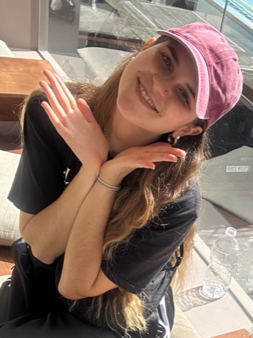

Olga Zaghen
PhD Student · Geometric Deep Learning · University of Amsterdam

👋 Hello world!
I am a PhD student in AMLab, at the University of Amsterdam, supervised by Prof. Erik Bekkers and Prof. Rita Fioresi. I am working on Geometric Deep Learning topics as part of the CaLIForNIA Marie Skłodowska-Curie Doctoral Network.
My research interests involve generative models for structured data, graphs, geometry and AI for global sustainability.
Previously, I was a research intern at EPFL, supervised by Prof. Pascal Frossard and Prof. Laura Toni, working on discrete diffusion models for graph generation. Before EPFL, I was a research intern at KAIST with Prof. Seunghoon Hong and Jinwoo Kim, working on deep learning models for graph data based on random walks.
I wrote my MSc Thesis on Sheaf Neural Networks in the Computer Laboratory at the University of Cambridge under the supervision of Prof. Pietro Liò and Prof. Andrea Passerini.
If you want to chat, feel free to contact me via email! ☺️
Selected Publications
Full list on my Google Scholar · * equal contribution
Beyond Research
Things I love include:
- House music (future / tech / Chicago / deep house to be very specific). I dance shuffle and cutting shapes, and also started learning DJ!
- I love dancing in general, and trying out new styles. I also enjoy singing and karaokes.
- I have a passion for observing people (Italian toxic trait, maybe) and seeing their reactions to socially unexpected behaviors. Best hobby ever.
- I fell in love with Korea when I lived there and I am now on a mission of spending some time there each year of my life. I also insanely love Korean hip hop music and festivals!
- My favorite way to relax is doing long walks in nature, and hiking mountains when available.
- I love exploring the wonderful city where I live, Amsterdam, and last but not least, spending time with my friends (both from Amsterdam and all over the world :))
Happy to meet fellow machine learners with similar passions!